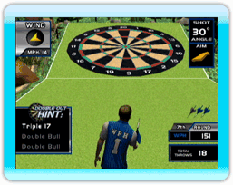

12 |
Points Pro et conseils utiles |
 |

Classic Lawn Darts (Fléchettes de pelouse classiques) : si une partie classique se termine par une égalité, on utilise des points Pro afin de déterminer le gagnant. Ce système de points mesure la distance entre chaque fléchette et le centre de la cible pour assigner une valeur de points. Ces points sont ensuite ajoutés ensemble.  501 : puisque le marquage du plus grand nombre de points possible est le but ultime, visez le plus grand nombre que vous avez tendance à frapper. Pour de nombreuses personnes, il s’agit de viser le 20 ou le 20 triple. Le seul problème est le « 1 » dangereux qui se trouve juste à la droite du 20. Le 19 constitue une autre option populaire, particulièrement si vous pouvez le frapper haut près du mille.

Cricket : pour gagner au jeu de cricket, il faut contrôler le territoire sur la cible. Les stratégies varient selon ses habiletés personnelles, mais les experts s’entendent pour dire que s'il y a un nombre que vous êtes doué pour fermer, fermez-le en premier. Idéalement, il s'agit du mille, car si vous pouvez fermer rapidement le « mille », vous forcez votre adversaire à reproduire cet effort sinon vous marquez des points à ses dépens.
Poker Darts (Fléchettes de poker) : puisque chaque donne vaut une prime de 100 points pour chaque joueur que vous battez, il est important de partir du bon pied et de prendre de l’avance sur votre(vos) adversaire(s). Rappelez-vous qu’il est rare d'obtenir une quinte royale et que votre adversaire a toujours l'occasion de bloquer le lancer que vous planifiez si vous êtes sur le point de gagner la main. Il est plus sécuritaire de vous concentrer sur un jeu plus réaliste, comme une paire de haute valeur. Lorsque vous obtenez une paire, vous avez de nombreuses options : Vous pouvez tenter d'obtenir une autre paire, une main pleine, un brelan ou un carré. Surveillez toujours les cartes avant de lancer et déterminez les cartes qui sont regroupées ensemble et vers le centre. |
 |
 |
 |